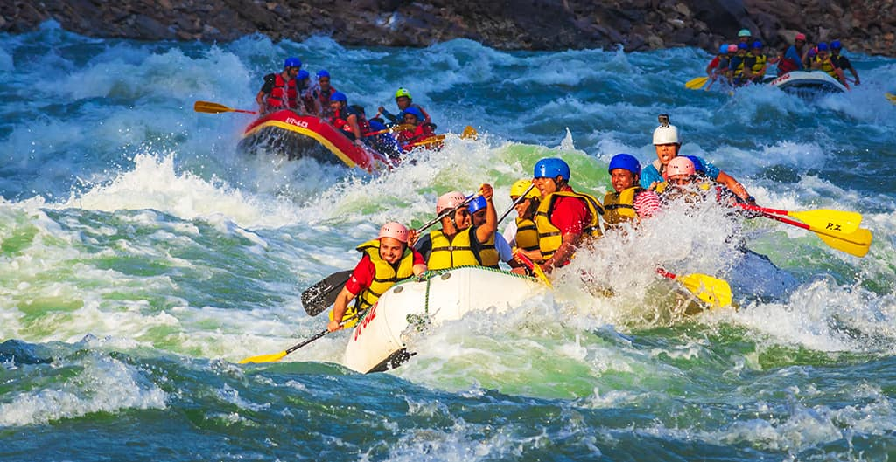

Rafting Travel

PURPOSE: To awaken the spirit of adventure in every human being by connecting them with the untamed power of nature. MISSION: To deliver world-class, safe, and unforgettable eco-adventure experiences. CREED: The River is Our Teacher, We respect its power, learn from its currents, and never underestimate its strength. Humility and safety always come first.
History
It all started in the summer of 2015, with an immense passion for the current. A group of friends, all experienced river guides, felt that conventional adventure tourism had become too rigid, forgetting the true connection with nature and pure adrenaline.
That's how Rafting Travel was born. We decided to leave our corporate jobs and hang up our ties to replace them with life jackets and paddles. At first, it was just the three of us running a single stretch of river, sharing our lunch with travelers, and making sure that everyone who got on the raft left not just with wet clothes, but with an unforgettable smile and a new respect for the water.
Today, more than a decade later, Rafting Travel has grown to become one of the leading adventure travel agencies in the region. We’ve expanded our routes from family-friendly Class II rapids to challenging Class IV and V whitewater for true thrill-seekers. Yet, even though our team has grown and our gear is now state-of-the-art, our philosophy remains the same: the river is our home and every customer is part of the family.